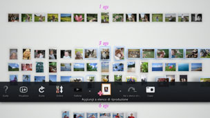

Creare un elenco di riproduzione di foto selezionate
È possibile selezionare alcune foto per creare un elenco di riproduzione. L'elenco di riproduzione consente di visualizzare le foto selezionate nello stesso ordine in qualsiasi momento.
Creazione di un elenco di riproduzione
1. |
Da [Area raccolta], selezionare una foto che si desidera aggiungere all'elenco di riproduzione, premere il tasto  |
||||||||||||
|---|---|---|---|---|---|---|---|---|---|---|---|---|---|
2. |
Utilizzare la levetta sinistra per spostarsi su un'area vuota della schermata [Area elenco di riproduzione], quindi premere il tasto |
||||||||||||
3. |
Impostare le seguenti opzioni per l'elenco di riproduzione.
|
 (Aggiungi a elenco di riproduzione).
(Aggiungi a elenco di riproduzione). .
.
 (Musica) nella schermata XMB™.
(Musica) nella schermata XMB™.Note
- Le impostazioni dell'elenco di riproduzione possono essere modificate in seguito in
 (Modifica).
(Modifica). - Ogni elenco di riproduzione può avere impostazioni diverse.
Aggiunta di foto ad un elenco di riproduzione.
1. |
Selezionare le foto che si desidera aggiungere all'elenco di riproduzione, premere il tasto |
|---|---|
2. |
Selezionare l'elenco di riproduzione, quindi premere il tasto |
Modifica delle impostazioni di un elenco di riproduzione
È possibile modificare le impostazioni di un elenco di riproduzione. Selezionare l'elenco di riproduzione che si desidera modificare, premere il tasto  , quindi selezionare (Modifica).
, quindi selezionare (Modifica).
Spostamento di un elenco di riproduzione
È possibile spostare un elenco di riproduzione in un'altra posizione. Selezionare l'elenco di riproduzione che si desidera spostare, premere il tasto , quindi selezionare  (Sposta). È possibile spostare l'elenco di riproduzione utilizzando la levetta sinistra.
(Sposta). È possibile spostare l'elenco di riproduzione utilizzando la levetta sinistra.
Nota
È inoltre possibile spostare un elenco di riproduzione senza accedere al menu. Selezionare l'elenco di riproduzione e, tenendo premuto il tasto  , utilizzare la levetta sinistra per spostare l'elenco.
, utilizzare la levetta sinistra per spostare l'elenco.
Eliminazione di un elenco di riproduzione
Per eliminare un elenco di riproduzione, selezionarlo, premere il tasto , quindi selezionare  (Elimina)
(Elimina)